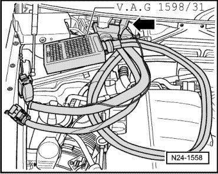

Multiport Fuel Injection (MFI)
Fuel Injectors, Checking
Special tools, testers and auxiliary items required
• Remote control connection (V.A.G 1348/3A)
• Adapter cable (V.A.G 1348/3-2)
• Adapter cable, 121-pin (V.A.G 1598/31)
• Injector quantity testing device (V.A.G 1602)
• Adapter cable (V.A.G 1348/3-3)
• Connector test set (V.A.G 1594C)
Test Conditions
• Fuel pressure must be OK, check --> [ Fuel Pressure Regulator and Residual Pressure, Checking ] Fuel Pressure Regulator and Residual Pressure, Checking.
Test Sequence
- Remove the intake manifold.
- Remove the complete fuel rail (fuel lines remain attached).
Checking for Leaks
- Remove cover over fuse holder.
- Pull fuel pump relays - 1 - and - 2 - out of their sockets.

- Connect remote control for VAG 1348 (V.A.G 1348/3A) with the adapter cable (V.A.G 1348/3-3) - arrow - to connection for fuel pump relay for right fuel delivery unit.

- Connect second connection of adapter cable (V.A.G 1348/3-3) - arrow - to connection to fuel pump relay for left fuel delivery unit.

- Operate remote control.
If fuel pumps run:
- Check injectors for leaks (visual inspection). Only 1 to 2 drops per minute may escape from each valve when fuel pump is running.
If the fuel loss is greater:
- Replace faulty fuel injector --> [ (Item 4) ] .
Perform installation of injectors in reverse order. When doing this note the following:
• Replace O-rings on all injectors and lightly moisten with clean engine oil.
• Insert fuel injectors into fuel rail perpendicular and in correct position, and secure them with retaining clips.
• Position fuel distributor with secured fuel injectors on cylinder head and apply uniform pressure to press it in.
Injection Quantity, Checking
Test Conditions
• Fuel pump relays and fuses 13 and 14 are in their sockets.
Test Sequence
- Connect adapter cable, 121-pin (V.A.G 1598/31) and bridge text box sockets 1 and 65 using adapter leads from connector test set (V.A.G 1594C).

- Place a fuel injector to be tested into a graduated measuring glass of injection rate tester (V.A.G 1602).
- Using adapter cables from connector test kit (V.A.G 1594/C), connect one terminal of fuel injector to be checked to engine ground (GND).

- Connect second fuel injector terminal with adapter cable to remote control for VAG 1348 (V.A.G 1348/3A) using adapter cable (V.A.G 1348/3-2).
- Connect alligator clip to battery (+) terminal in engine compartment.
- Operate remote control for 30 seconds.
- Repeat check on the other injectors. To do this use new measuring beakers.
- After all injectors have been activated, place the measuring glasses on a horizontal surface and compare the injected quantity. Specified value: 128 to 140 ml per injector
If measured value of one or more fuel injectors is below or above the indicated specified value:
- Replace faulty fuel injector --> [ (Item 4) ] .
Perform installation of injectors in reverse order. When doing this note the following:
• Replace O-rings on all injectors and lightly moisten with clean engine oil.
• Insert fuel injectors into fuel rail perpendicular and in correct position, and secure them with retaining clips.
• Position fuel distributor with secured fuel injectors on cylinder head and apply uniform pressure to press it in.